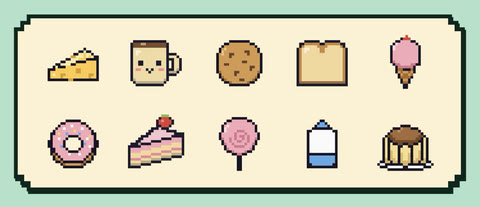
고르는 재미목표마다 마음에 드는 도트 스티커를 골라요. 오늘은 어떤 걸로 붙일지 고르는 것부터 즐거워요.
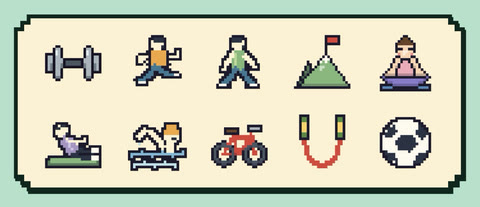
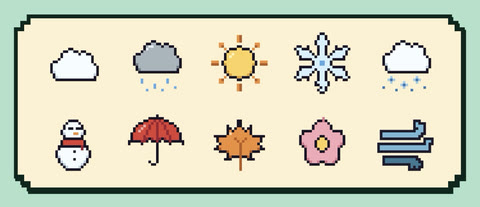
자기 전 책 열 쪽, 저녁 산책, 물 한 잔. 해낸 날 빈칸을 톡 누르면 스티커가 붙어요. 붙인 스티커만큼 판이 차곡차곡 채워져요.
무료로 받을 수 있어요App Store곧 출시로그인하지 않아도 바로 쓸 수 있어요.
어릴 때 모으던 칭찬 스티커처럼, 해낸 만큼 판이 채워져요.

고르는 재미목표마다 마음에 드는 도트 스티커를 골라요. 오늘은 어떤 걸로 붙일지 고르는 것부터 즐거워요.
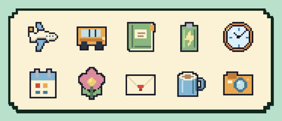
붙이는 재미빈칸을 한 번 톡. 스티커가 한 칸씩 붙을 때마다 판이 채워지는 게 눈에 보여요.
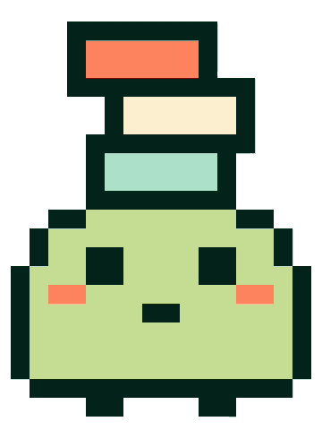
꽉 찬 판마지막 칸까지 채운 판을 다시 보면 뿌듯해요. 판을 채울 때마다 차곡이도 표정으로 반응해요.
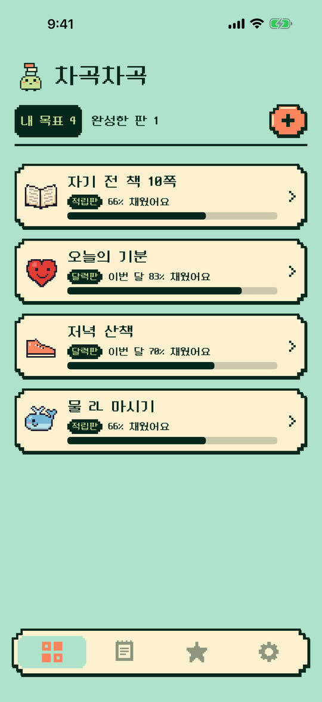
이름을 짓고 마음에 드는 스티커를 골라요. 칸 수를 정하는 적립판, 해낸 날짜에 붙이는 달력판 중에서 골라요. 달력판은 끝나는 날을 정할 수도 있어요.
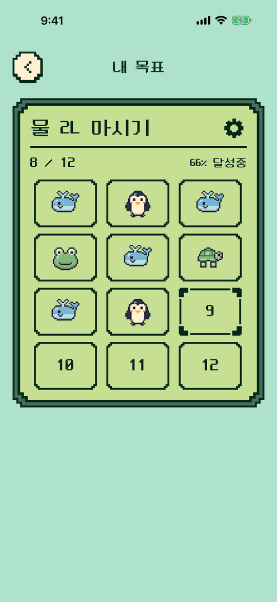
빈칸을 한 번 누르면 끝. 잘못 붙였다면 꾹 눌러 떼면 돼요. 지난 날짜도 나중에 채울 수 있어요.
톡, 붙였어요!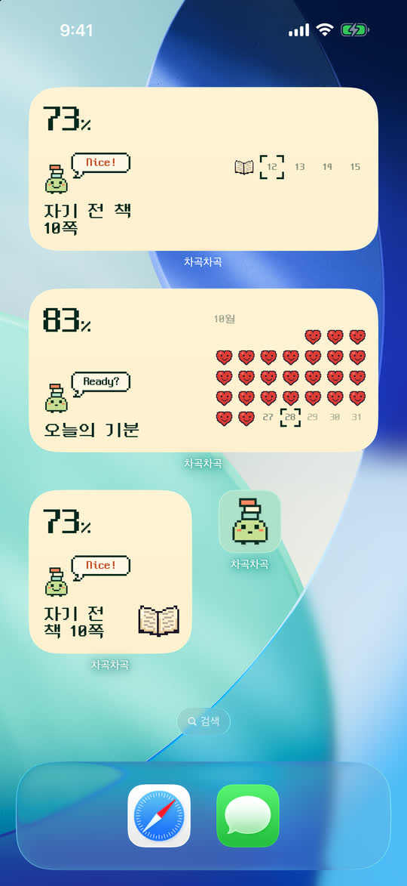
운동 끝난 그 자리에서 Apple Watch로 붙여요. 스티커를 하나 붙일 때마다 차곡이 머리 위에 블록이 하나씩 쌓이고, 세 개가 모이면 차곡이가 보관함에 넣어요.
홈 화면에는 목표 하나, 적립판, 이번 달 위젯을 두세요. 휴대폰을 켠 김에 한 번 누르면 스티커가 붙어요. 바탕은 아이보리, 흰색, 먹색 중에서 골라요.
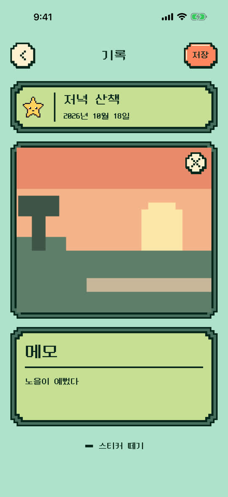
붙인 스티커를 누르면 그날 사진 한 장과 짧은 메모를 남길 수 있어요. 스티커만 붙여도 충분한 기록이에요. 앱에서 찍은 사진은 휴대폰 앨범에 쌓이지 않아요.
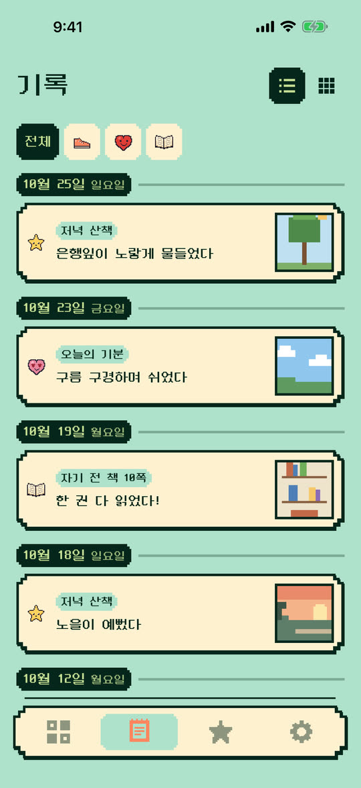
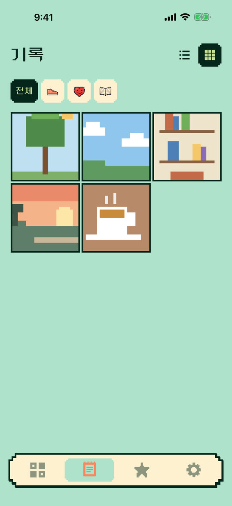
하단 기록 탭을 열면 사진이나 메모를 남긴 칸만 날짜별로 모여 있어요. 위쪽 칩으로 목표별로 골라 볼 수 있고요. 날짜별 줄로 읽는 타임라인과 사진을 3열로 보는 피드, 두 가지 보기로 바꿔 가며 봐요. 완성한 판의 기록도 함께 보여요.
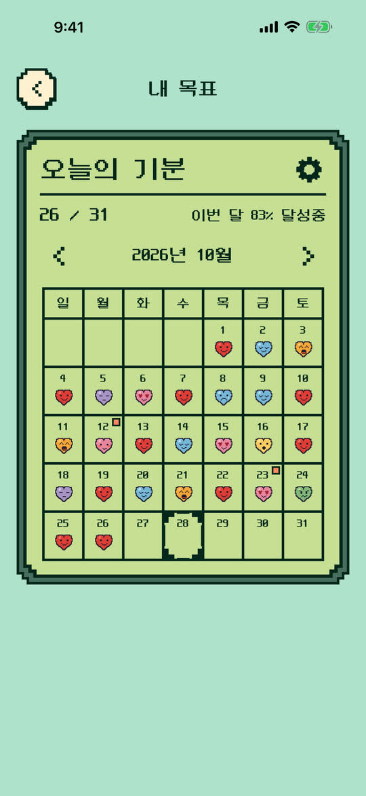
한 달 뒤 꽉 찬 판과 그날의 사진을 넘겨 보면, 내가 해낸 날들이 한눈에 보여요. 다 채운 판도 계속하기로 이어 갈 수 있어요.
벌써 26칸째옛날 게임기 화면 같은 도트 스티커예요. 기본, 동물, 감정 묶음은 무료이고 운동, 간식, 사물, 날씨와 계절 묶음은 따로 열 수 있어요. 잠긴 묶음도 광고를 보면 하루 동안, 스티커 붙인 날이 쌓이면 3일 동안 무료로 써 볼 수 있어요.
무엇이든 판이 될 수 있어요. 작게 정할수록 자주 붙이고, 자주 붙일수록 즐거워요.
설치하고 바로 시작해요. 쌓아 온 기록이 사라지지 않게 백업도 준비해 뒀어요.
지금 App Store 출시를 준비하고 있어요.
무료로 받을 수 있어요App Store곧 출시궁금한 점이 있다면 고객 지원에 물어봐 주세요.